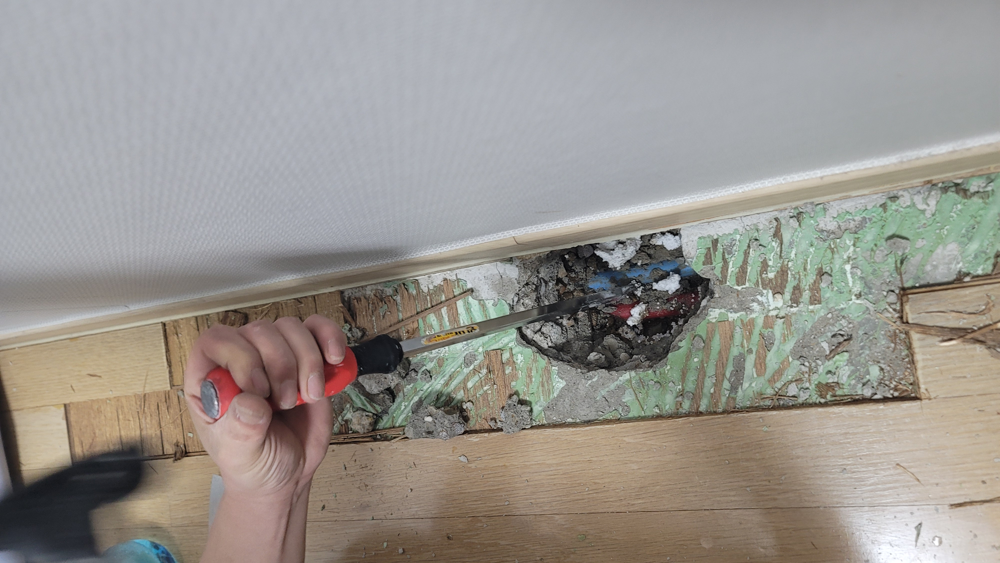
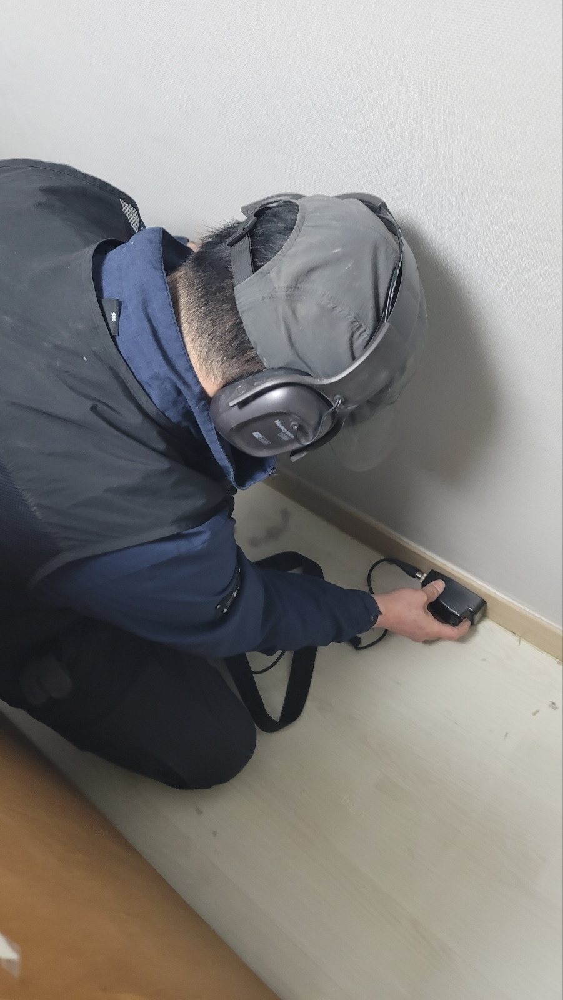
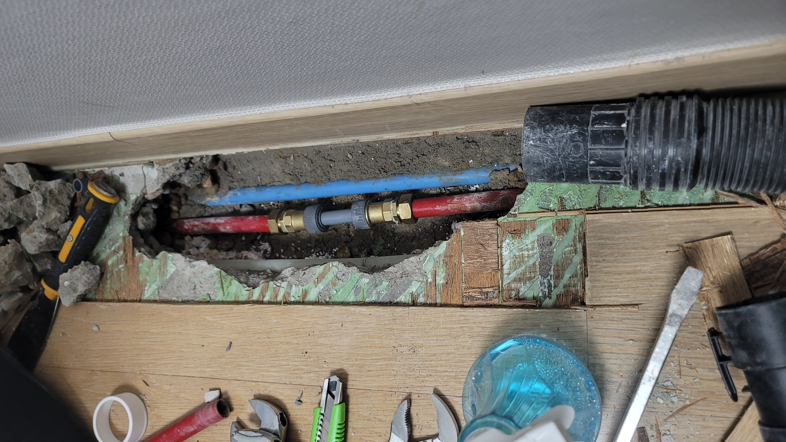

수도 요금이 평소보다 부쩍 많이 나오고 벽지에도 미세한 습기가 느껴진다는 문의를 받고 출동한 현장입니다. 육안으로는 벽이나 바닥에 뚜렷한 얼룩이 보이지 않아 고객님도 처음에는 반신반의하셨는데, 이런 경우 눈으로만 봐서는 정확한 누수 지점을 찾기가 사실상 불가능합니다. 매립 배관에서 발생하는 누수는 물이 흘러나오는 통로가 벽체나 바닥 구조물을 따라 예상치 못한 방향으로 퍼지기 때문에, 얼룩이 보이는 자리와 실제 누수 지점이 다른 경우도 적지 않습니다.
먼저 청음탐지 장비로 벽과 바닥을 따라가며 물이 흐르는 소리를 확인했습니다. 배관 안에서 물이 새어 나올 때 발생하는 미세한 진동음을 헤드폰으로 증폭해서 듣는 방식으로, 매립 배관 누수를 찾는 가장 기본이 되는 진단법입니다. 소음이 있는 낮 시간보다는 비교적 조용한 시간대에 여러 지점을 옮겨가며 소리의 크기를 비교해 음원이 가장 큰 지점을 좁혀나갔습니다. 이어서 가스검사를 함께 진행해 배관 안에 인체에 무해한 특수 가스를 주입하고, 지표면과 바닥재 틈으로 올라오는 가스 농도를 가스탐지기로 측정해 의심 구간을 한 번 더 교차 확인했습니다. 두 가지 방식의 결과가 일치하는 지점을 최종 누수 위치로 특정했습니다.
정확한 지점이 확인된 뒤 바닥재를 걷어내고 해당 구간만 최소한으로 굴착했습니다. 온수관과 냉수관 이음부가 노후되어 미세하게 벌어져 있었고, 그 틈으로 물이 지속적으로 새고 있었습니다. 문제 구간을 잘라내고 새 이음쇠로 배관을 다시 연결한 뒤, 수압을 걸어 이음부에서 더 이상 물이 새지 않는 것을 확인하고 마감까지 깔끔하게 정리했습니다.
누수는 방치할수록 수도 요금 증가는 물론 구조물 손상, 곰팡이 발생으로도 이어질 수 있습니다. 특히 안성·평택·천안 일대처럼 아파트와 주택, 상가가 섞여 있는 지역에서는 배관 매립 구조가 건물마다 달라 경험 없는 육안 점검만으로는 원인을 오판하기 쉽습니다. 수도 요금이 갑자기 늘었거나 벽지·바닥에 이상 증상이 있으시다면 미루지 마시고 편하게 연락 주세요.
비슷한 증상으로 문의하실 곳을 찾고 계신다면 전화로 접수해 주세요. 접수 건은 확인 후 신속하게 연결해 안내해 드리며, 현장 진단 후 견적에 동의하신 뒤에만 작업이 진행됩니다.